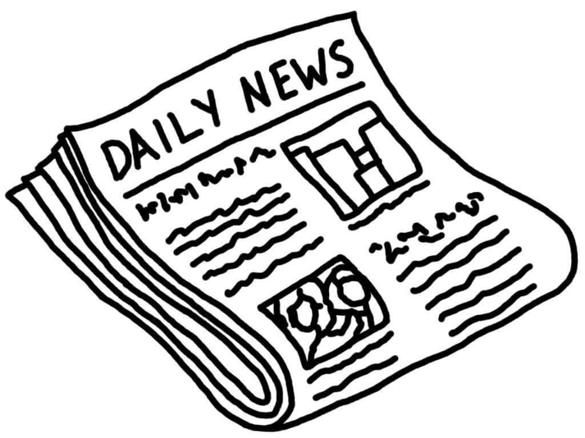

Newspapers
Life without newspaper is difficult to imagine. It is the first thing that we look for every morning. It brings us news and views from all corners of the world. Any event or occurrence of importance that takes place is reported by the newspapers. The newspapers carry information for everyone-businessman, politician, unemployed people, players and kids etc. It widens knowledge, keeps one abreast of all advances made in the fields of science, education, medicine and technology. Newspapers are important pillar in a democracy. A free press not only makes people aware of the views and policies of government, but also of their rights. It keeps the government informed of people’s wishes, desires and aspiration can be expressed. Newspapers keep us in constant touch with news, developments, changes, advances and occurrences in each nook and corner of the world and at a very little price to the reader. It’s popularity gives it immense power in molding public opinion. Unfortunately most newspapers have vested interests. They are owned by capitalist and have to toe their line. Some newspapers are organs of political party. Their loyalty to the party is greater than sense of fair play. It is essential to cultivate faculty in the readers, so that they do not believe every word of news. The newspaper should also have a very strict code of ethics to which it should conscientiously adhere to.